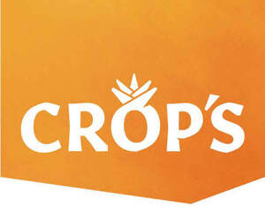

Trade Mark Journal No.2025/032 8 August 2025
UK00004204659 16 May 2025 (29,30,31,32)

International priority date claimed: 28 January 2025
(European Union Intellectual Property Office (EUIPO))
(019136493)
- Class 29
- Preserved, frozen, dried and cooked fruits; Fruit desserts; Fruit peel; Fruit paste; Fruit-based snack food; Fruit chips; Fruit salads; Fruit marmalade; Fruit pulp; Aromatized fruit; Fruit jellies; Fruit leathers; Sliced fruit; Fruit purees; Fruit pectin; Crystallized fruits; Fruit preserves; Fruit Powders; Fruit, stewed; Fruit spread; Fruit, processed; Cut fruits; Fruits, tinned [canned (Am.)]; Fermented fruits; Glazed fruits; Bottled fruits; Fruit flavoured yoghurts; Dried fruit mixes; Candied fruit snacks; Dried fruit products; Processed lychee fruit; Pressed fruit paste; Fruit juices for cooking; Dried fruit-based snacks; Arrangements of processed fruit; Fruit preserved in alcohol; Mincemeat made from fruits; Milk drinks containing fruits; Preserved fruits; Fruit-based meal replacement bars; Fruit-based fillings for cobblers; Mixtures of fruit and nuts; Fruit-based concentrate for cooking; Spreads consisting mainly of fruits; Fruit- and nut-based snack bars; Milk-based beverages containing fruit juice; Fruit-based fillings for cakes and pies; Jellies, jams, compotes, fruit and vegetable spreads; Processed fruits, fungi, vegetables, nuts and pulses; Snack mixes consisting of dehydrated fruit and processed nuts; Snack mixes consisting of processed fruits and processed nuts; Fruit puree portions; Fruit for smoothies; Fruit for drinks; Fruit for bakery; Fruit for pastry.
- Class 30
- Fruit cakes; Fruit vinegar; Fruit sugar; Fruit ices; Fruit sauces; Pastries containing fruit; Fruit breads; Fruit teas; Fruit confectionery; Fruited scones; Iced fruit cakes; Fruit cake snacks; Biscuits containing fruit; Edible fruit ices; Ice cream with fruit; Fruit drops [confectionery]; Fruit ice bars; Gum sweets; Chocolate coated fruits; Fruited malt loaf; Breakfast cereals containing fruit; Achar pachranga (fruit pickle); Biscuits flavoured with fruit; Crackers flavoured with fruit; Fruit flavourings, except essences; Flavourings made from fruits; Pastries containing creams and fruit; Bread casings filled with fruit; Confectionery having liquid fruit fillings; Sweeteners consisting of fruit concentrates; Oat clusters containing dried fruit; Fruit flavorings, other than essential oils; Fruit flavoured tea [other than medicinal]; Sugar for making conserves of fruit; Fruit-flavoured beverages based on tea; Sweetmeats [candy] being flavoured with fruit; Fruit gums [other than for medical use]; Natural sweeteners in the form of fruit concentrates; Chewing sweets (Non-medicated -) having liquid fruit fillings; Filled yeast dough with fillings consisting of fruits; Breakfast cereals containing a mixture of fruit and fibre; Fruit flavoured water ices in the form of lollipops; Food mixtures consisting of cereal flakes and dried fruits; Snack bars containing a mixture of grains, nuts and dried fruit [confectionery].
- Class 31
- Fresh fruits; Fresh citrus fruits; Fruit trees; Fruit shrubs; Living fruit plants; Unprocessed fruits; Seeds for fruit; Almonds [fruits]; Nuts [fruits]; Marc; Fresh kiwi fruit; Fresh carambolas; Fresh passion fruit; Mandarins [fruit, fresh]; Unprocessed lychee fruit; Organic fresh fruit; Fresh noni fruit; Berries, fresh fruits; Mixed fruits [fresh]; Tropical fruits [fresh]; Fresh dragon fruits; Fresh hawthorn fruits; Fresh palm fruits; Arrangements of fresh fruit; Gift baskets of fresh fruits; Fresh fruits, nuts, vegetables and herbs.
- Class 32
- Smoothies; Fruit squashes; Fruit drinks; Juices; Fruit nectars, non-alcoholic; Iced fruit beverages; Fruit-based beverages; Fruit juice concentrates; Concentrated fruit juice; Aerated fruit juices; Fruit-flavoured beverages; Mixed fruit juice; Organic fruit juice; Fruit flavoured waters; Fruit juice beverages; Non-alcoholic fruit juice beverages; Non-alcoholic fruit punch; Non-alcoholic fruit cocktails; Non-alcoholic fruit extracts; Fruit flavoured soft drinks; Fruit flavored soft drinks; Frozen fruit-based beverages; Concentrates for making fruit drinks; Non-alcoholic dried fruit beverages; syrups for making fruit-flavoured drinks; Beverages consisting principally of fruit juices; Non-alcoholic beverages containing fruit juices; Non-alcoholic sparkling fruit juice drinks; Fruit-based soft drinks flavoured with tea; Powders used in the preparation of fruit-based beverages; Non-alcoholic fruit extracts used in the preparation of beverages; Beverages consisting of a blend of fruit and vegetable juices.
CROP'SNV
Representative: KOB NV